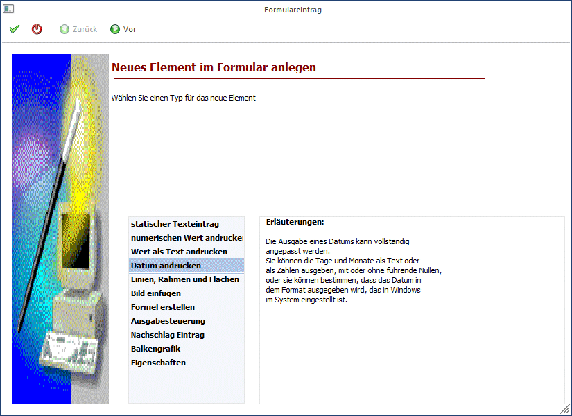
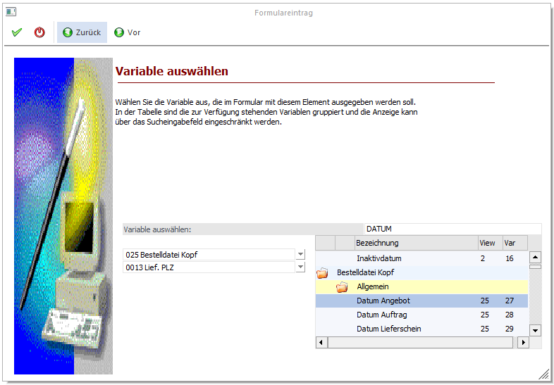
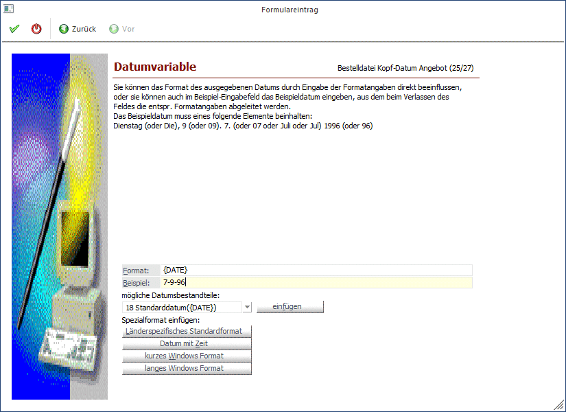

Mit dieser Option können Datümer angedruckt werden.
Schritt 1
Bei der Auswahl des neuen Elements wird die Option "Datum andrucken" ausgewählt.

Durch Anklicken des VOR-Buttons gelangt man in das nächste Fenster, wo definiert werden kann, welche Variable angedruckt werden soll:
Schritt 2

Aus der ersten Auswahllistbox kann der Datenbereich ausgewählt werden, wobei für jeden Ausdruck immer nur bestimmte Datenbereiche vorgesehen sind (in einem Kontoblatt kann z.B. nicht auf Artikelstammdaten zugegriffen werden).
Aus der zweiten Listbox muss dann die Variable selbst ausgesucht werden, die angedruckt werden soll. Im rechten Bereich des Fensters kann auch nach bestimmten Variablen gesucht werden. Wenn im Feld Suchbegriff ein Wert eingetragen und durch Drücken der TAB-Taste bestätigt wird, werden alle verfügbaren Variablen angezeigt, die den Suchbegriff irgendwo enthalten. Durch einen Doppelklick aus dem Suchergebnis kann die Variable übernommen werden.
Durch Anklicken des VOR-Buttons können weitere Einstellungen zum Andruck der Variable eingegeben werden. Durch Anklicken des ZURÜCK-Buttons kann nochmals der Typ verändert werden. Durch Drücken der F5-Taste wird der Eintrag in das Formular übernommen. Durch Drücken der ESC-Taste wird das Fenster geschlossen.
Schritt 3

Im 3. Schritt können zusätzliche Einstellungen für den Andruck vorgenommen werden:
Ø Format
Im diesem Feld wird das Format angezeigt, in dem das Datum ausgedruckt wird. Das Format kann durch die weiteren Optionen bestimmt werden.
Ø Beispiel
In diesem Feld wird anhand des Datums 9. Juli 1996 dargestellt, wie das Datum - anhand der Einstellungen im Feld Format - ausgegeben wird.
Ø mögliche Datumsbestandteile
Aus der Auswahllistbox können Bestandteile des Datums ausgewählt werden, die durch Anklicken des Einfügen-Buttons in das Feld Format übernommen werden. Dabei ist darauf zu achten, an welcher Stelle der Cursor im Feld "Format" steht - denn dort wird die ausgewählte Option eingefügt. So kann ein individuelles Datumsformat zusammengestellt werden.
Folgende Optionen stehen dabei zur Verfügung:
ü Tag, numerisch mit 0
Der Tag
wird numerisch angedruckt, wobei bei einstelligen Tagen eine führende 0
vorangestellt wird (z.B. 03 oder 11).
ü Tag, numerisch
Der Tag wird
numerisch angedruckt, (z.B. 3 oder 11).
ü Tag in Worten
Der Tag wird in
ganzen Worten angedruckt (z.B. Montag)
ü Tag (kurz) in Worten
Der Tag
wird in Worten, allerdings in abgekürzter Form ausgegeben (z.B. Mon für
Montag).
ü Monat, numerisch mit 0
Das
Monat wird mit Ziffern ausgegeben, wobei bei einstelligen Monatszahlen eine
Vorlauf-0 gedruckt wird (z.B. 03, 11)
ü Monat, numerisch
Das Monat wird
mit Ziffern ausgegeben (z.B. 3, 11)
ü Monat in Worten
Das Monat wird
in Worten angedruckt (z.B. März, November)
ü Monat (kurz) in Worten
Das
Monat wird in Worten, allerdings in abgekürzter Form ausgegeben (z.B. Mär,
Nov)
ü Jahr, zweistellig
Die
Jahreszahl wird mit 2 Stellen angezeigt.
ü Jahr, zweistellig mit 0
Die
Jahreszahl wird mit 2 Stellen angezeigt, ist das Jahr allerdings einstellig,
wird eine führende Null dargestellt (für 2001 wird 01 angedruckt).
ü Jahr, vierstellig
Die
Jahreszahl wird vierstellig ausgegeben.
ü Minuten mit 0
Die Minuten
werden angezeigt, wobei einstellige Werte mit einer 0 aufgefüllt werden.
ü Minuten
Die Minuten werden
angezeigt.
ü Sekunden mit 0
Die Sekunden
werden angezeigt, wobei einstellige Werte mit einer 0 aufgefüllt werden.
ü Sekunden
Die Sekunden werden
angezeigt.
ü Stunden mit 0
Die Stunden
werden angezeigt, wobei einstellige Werte mit einer 0 aufgefüllt werden.
ü Stunden
Die Stunden werden
angezeigt.
ü Standarddatum
Damit wird das
Datum gemäß den Standardeinstellungen aus der Windows-Ländereinstellung
angedruckt.
ü kurzes Windowsformat
Damit wird
das kurze Datumsformat gemäß den Standardeinstellungen aus der
Windows-Ländereinstellung angedruckt.
ü langes Windowsformat
Damit wird
das lange Datumsformat gemäß den Standardeinstellungen aus der
Windows-Ländereinstellung angedruckt.
Ø Spezialformat einfügen:
Hier stehen 4 zusätzliche Optionen zur Verfügung, die durch Anklicken des jeweiligen Buttons in das Feld Format übernommen werden. Dabei wird allerdings der bestehende Inhalt des Feldes Format gelöscht.
ü Länderspezifisches
Standardformat
Damit wird das Standard-Format aus der Windows-Systemsteuerung
übernommen.
ü Datum mit Zeit
Es wird das
Standard-Format mit Zeit aus der Windows-Systemsteuerung übernommen.
ü kurzes Windows Format
Damit
wird das kurze Datumsformat gemäß den Standardeinstellungen aus der
Windows-Ländereinstellung angedruckt.
ü langes Windows Format
Damit
wird das lange Datumsformat gemäß den Standardeinstellungen aus der
Windows-Ländereinstellung angedruckt.
Durch Anklicken des ZURÜCK-Buttons kann die verwendete Variable verändert werden. Durch Drücken der F5-Taste wird der Eintrag in das Formular übernommen. Durch Drücken der ESC-Taste wird das Fenster geschlossen.